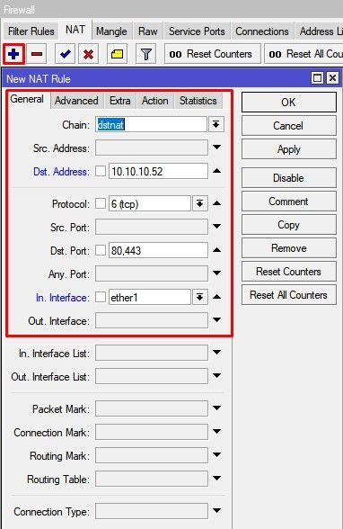
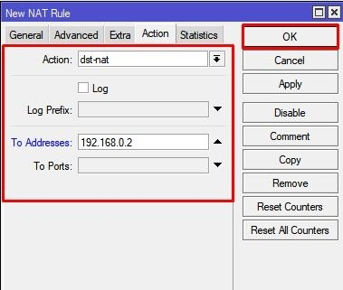
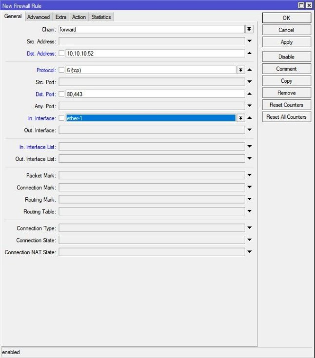
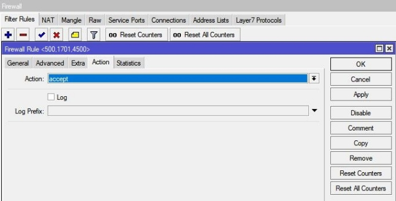
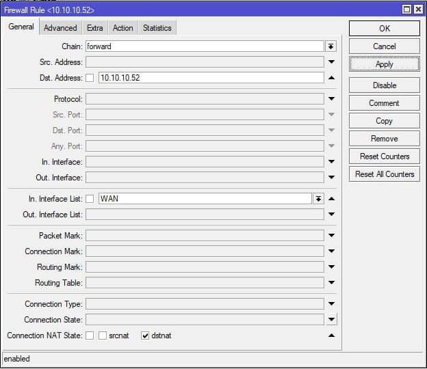
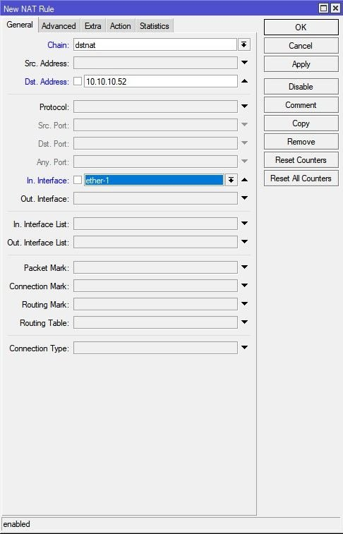

Прокидання портів в MikroTik, налаштування DMZ
В інструкції розглянуто налаштування MikroTik dst-NAT або просто прокидання порту. Популярні синоніми: Port forwarding , Virtual server . Як розширений варіант налаштування прокидання порту, будуть описані правила Firewall та створення демілітаризованої зони DMZ .
Для чого використовувати прокидання порту в MikroTik
Стандартні налаштування роутера MikroTik передбачають ізоляцію локальної мережі ( LAN ) від зовнішнього світу (Інтернет). Коли на роутер MikroTik надходить вихідний пакет із вузла локальної мережі, MikroTik відкриває певний порт і передає дані, змінюючи при цьому локальну IP- адресу вузла на зовнішній IP- адресу, виданий провайдером. А далі пакет слідує за маршрутом до одержувача. Відповідь від вузла одержувача, роутер MikroTik перенаправляє вузлу, який ініціював це з'єднання.

Ця технологія має назву NAT і за замовчуванням працює лише в односторонньому порядку – роутер MikroTik обробить лише ті пакети, з'єднання для яких були встановлені з внутрішньої мережі ( LAN ). А решту пакетів буде відкинуто.
Але в цій схемі популярний інший напрямок, коли в локальній мережі ( LAN ) присутній вузол типу: поштовий сервер , web сайт , VPN сервер до якого необхідно надати доступ із поза (мережі Інтернет) тоді, коли ініціатором з'єднання виступає зовнішня сторона. Для цього необхідно настроїти прокидання порту.
Прокидання порту або port forwarding це функція NAT (механізм перетворення IP адрес), при якій комбінації із зовнішньої IP адреси і порту відповідає IP адреса і порт з локальної мережі ( LAN ).
Варіанти застосування прокидання порту
Прокиди портів у роутері MikroTik популярні для:
- Відеоспостереження;
- Термінального сервера RDP ;
- Поштовий сервер;
- Web- сайту;
- IP телефонії;
- Інші приватні та корпоративні служби, які потребують зовнішнього доступу.
Як працює прокидання порту в MikroTik
Прокинути порт – означає зарезервувати певний номер порту з метою переадресації даних на локальний вузол. Роутер MikroTik не відхилятиме зовнішні запити, а створить умову для їх виключення.
Для роботи прокидання порту в MikroTik достатньо створити правило комбінації:
- Протокол;
- Зовнішній порт та IP (або інтерфейс);
- Внутрішній IP та порт.
При надходженні пакета, умови проходження якого описані в розділі NAT ( dstnat ), відбувається перенаправлення на вказаний локальний вузол.
Прокидання портів (Port Forwarding) в MikroTik
Для повноцінної роботи прокидання портів на маршрутизаторах MikroTik потрібно описати правила у двох категоріях: налаштування NAT ( dstnat ) та налаштування FireWall . Опишемо їх по порядку:
Прокидання портів MikroTik NAT-dstnat
Налаштування знаходиться в IP→Firewall→NAT


/ip firewall nat add action=dst-nat chain=dstnat dst-address=10.10.10.52 dst-port=80,443 \
in-interface=ether1 protocol=tcp to-addresses=192.168.0.2
Складові частини налаштування:
dstnat - вхідний напрямок;
Dst. Address – зовнішня IP адреса роутера MikroTik;
Dst. Port – зовнішній порт призначення;
In. Interface – інтерфейс, до якого підключений кабель з інтернетом;
To Addresses – внутрішня адреса призначення.
To Port – внутрішній порт призначення. Можна не заповнювати, якщо “Dst. Port” = “To Port”
Налаштування Firewall для прокидання порту в MikroTik
Базовий набір правил Firewall у MikroTik містить виняток щодо блокування пакетів, для правил, які описані ланцюжком dstnat . Але якщо Firewall зазнавав змін і описане правило прокидання порту не працює, потрібно додати дозвіл.
Налаштування знаходиться в IP→Firewall


/ip брандмауер фільтр \
add action=accept chain=forward dst-address=10.10.10.52 dst-port=80,443 in-interface=ether-1 protocol=tcp
Іншим варіантом налаштування Firewall для прокидання порту MikroTik є загальне правило Action = Accept для всіх портів, запис яких присутній в розділі NAT ( dstnat ).

/ip фільтр брандмауера
add action=accept chain=forward connection-nat-state=dstnat dst-address=\
10.10.10.52 in-interface-list=WAN
Налаштування MikroTik DMZ
DMZ набуде чинності, якщо не заповнити поля Protocol і Dst. port .

/ip firewall nat add action=dst-nat chain=dstnat dst-address=10.10.10.52 \ in-interface=ether-1 to-addresses=192.168.0.2
За аналогією стандартного прокидання портів, потрібно контролювати налаштування FireWall .